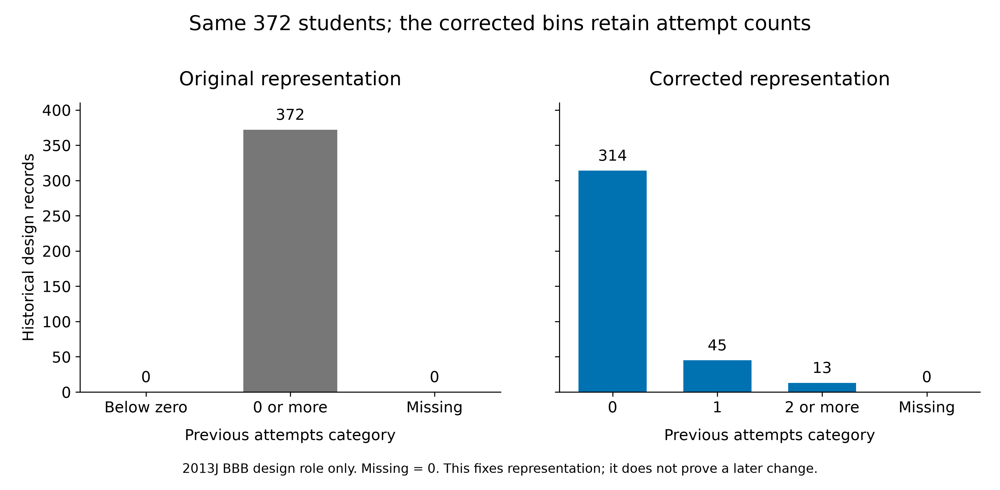
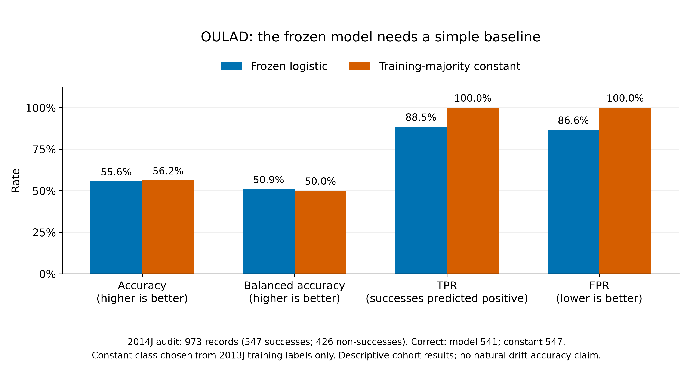

Previously examined OULAD data. New calibration and evaluation await approval.
01_oulad_representation

The old rule put all nonnegative counts together. The retained correction separates 0, 1 and 2+; the underlying records did not change.
Exact source CSV · PDF · SVG
02_oulad_prediction_baseline

The majority baseline is slightly more accurate; the frozen model has about 50.9% balanced accuracy. This limits outcome conclusions, without invalidating the separate input study.
Exact source CSV · PDF · SVG